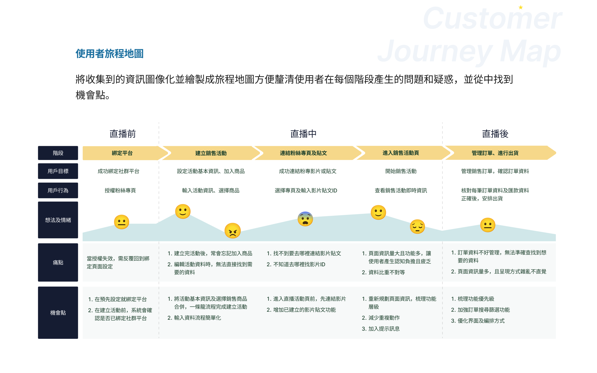
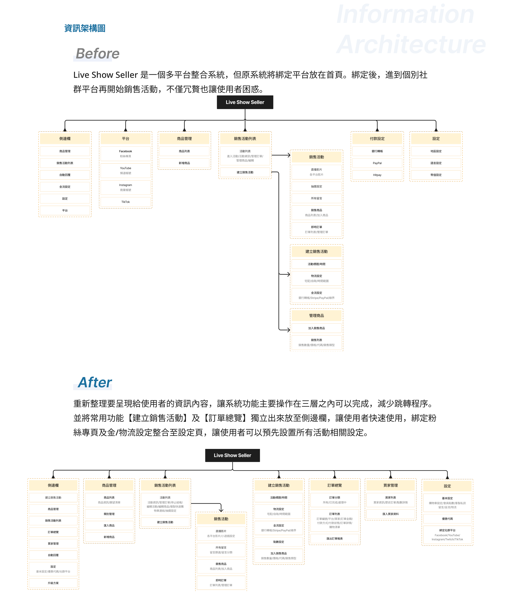
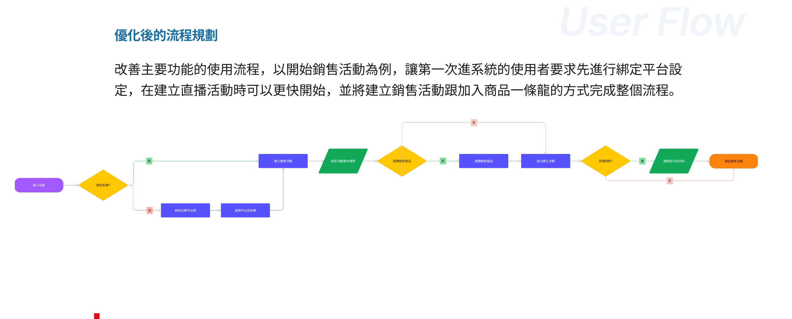
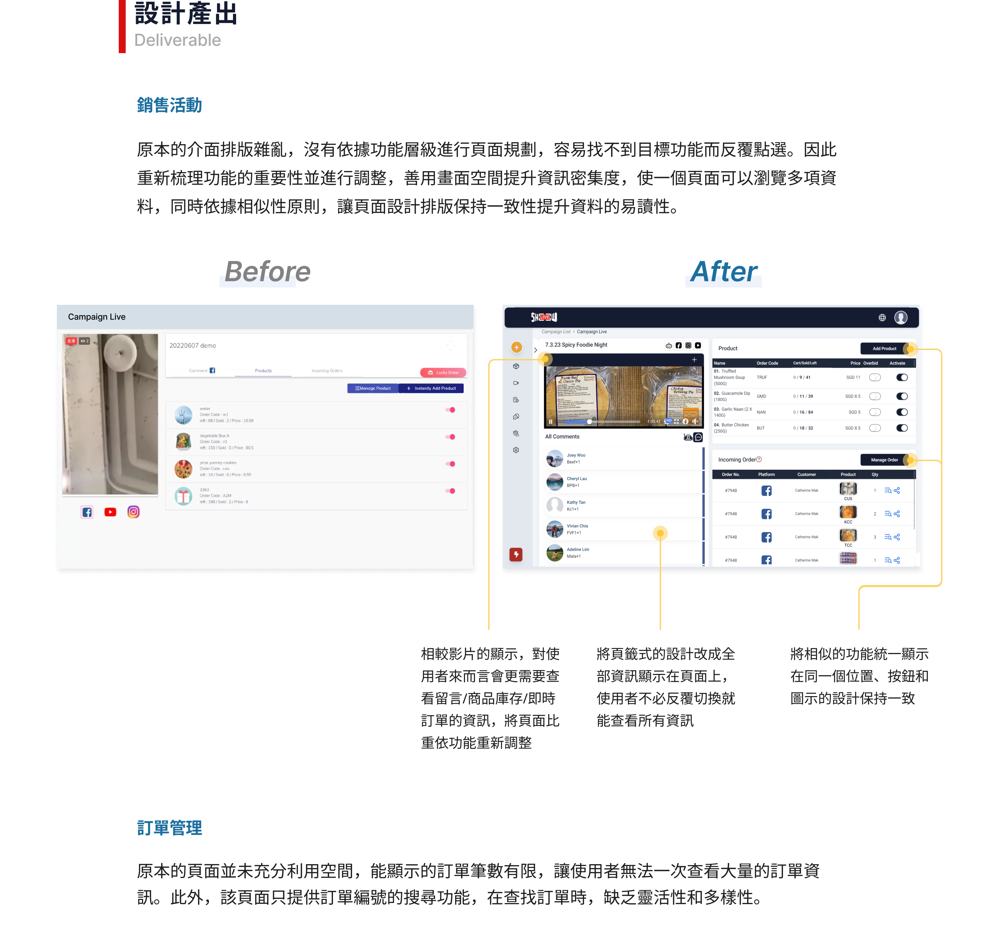
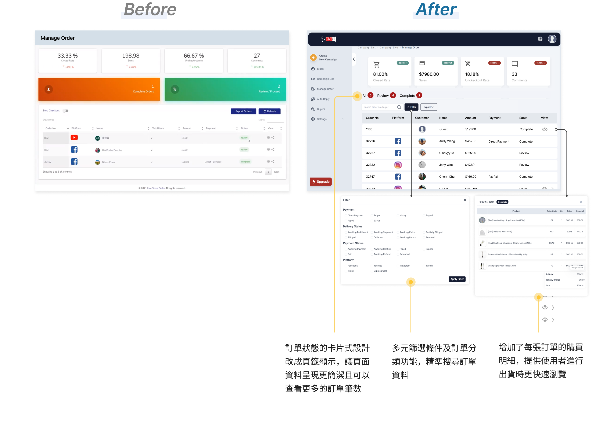
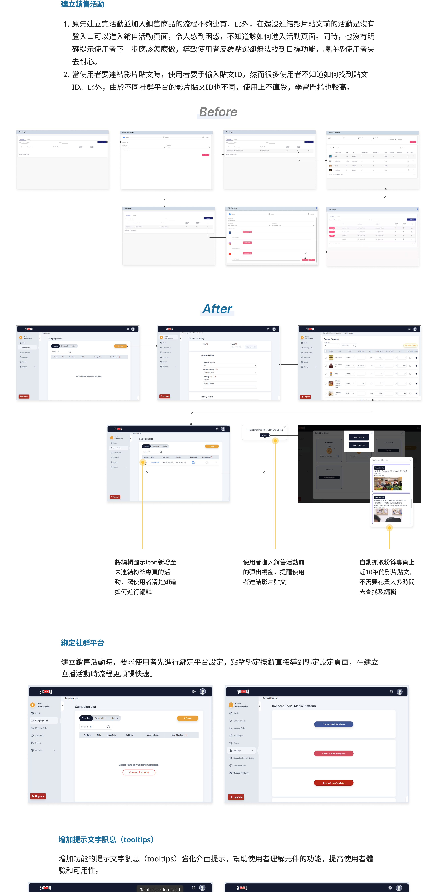
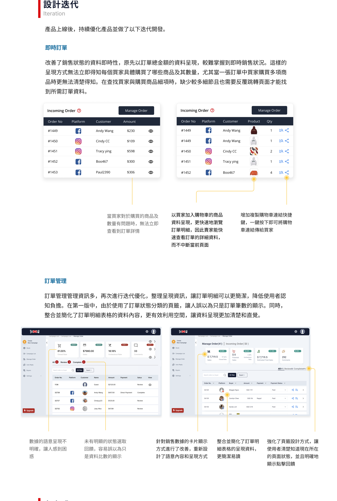
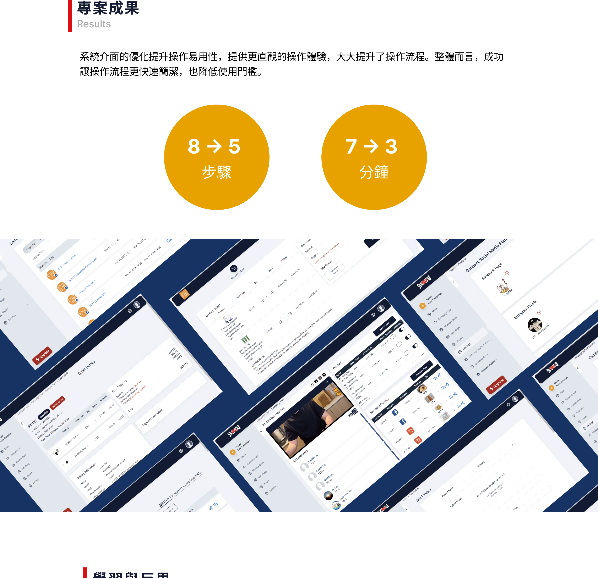

Live Show Seller
多平台銷售整單系統優化
系統功能散亂、上手門檻過高，讓賣家在直播現場手忙腳亂。這個專案重新梳理資訊架構、優化核心操作流程，讓完成一場直播銷售的步驟從 8 步縮到 5 步、學習時間從 7 分鐘降到 3 分鐘。
專案管理
平面設計師
線框稿 · 功能測試
（5 個月）
功能齊全，但沒人會用
Live Show Seller 是一個多平台社群接單系統，為賣家提供從直播前商品準備、直播中即時庫存追蹤與訂單管理，到活動結束後的訂單整理的完整服務。
然而，作為功能型的 SaaS 系統，Live Show Seller 花了大量資源在教導使用者如何操作——不僅如此，功能之間的邏輯並未整合，使用者常反覆在同一個動作打轉卻找不到出口。了解到平台的上手難度對使用者而言依然過高，這次改版的核心目標因此確立：
降低使用者的學習成本及進入門檻，提供一個快速上手和輕鬆管理的銷售整單系統。
三個讓使用者迷路的根本原因
雖然時程有限，無法進行深度的使用者訪談，但我參與了公司大部分的內外部產品會議與教育訓練，甚至主持多場內部教育訓練。透過直接觀察使用者操作，清楚收集到三個核心痛點：
核心功能流程不連貫
建立銷售活動與加入商品分屬兩個獨立入口，使用者常在直播開始後才發現忘記加入商品，臨時手動新增導致手忙腳亂。
頁面雜亂，認知負擔過重
系統整合商品庫存、銷售活動、訂單管理等多項任務，但頁面資訊呈現雜亂無章，對新手而言學習門檻高、容易放棄。
資訊架構混亂，找不到功能
登入後的首頁是綁定平台頁面——授權後就不再需要，卻占據最顯眼位置。重要功能如連結影片貼文的入口反而藏在深處，使用者容易迷路。
① 依照使用情境重新優化操作流程 ② 釐清資訊優先級，重新設計系統介面 ③ 根據使用頻率梳理功能層級，重新規劃資訊架構
從旅程地圖到資訊架構的重建
在使用者研究的基礎上，我將收集到的痛點圖像化為使用者旅程地圖（Customer Journey Map），釐清每個使用階段產生的問題與疑惑，並從中找出可介入的機會點。
使用者旅程地圖
將觀察到的資訊結構化，標記每個流程節點的使用者情緒與痛點，讓設計決策有所依據而非憑直覺。

Customer Journey Map — 標記各流程節點的痛點與機會點
重建資訊架構（IA）
Before：原系統將綁定平台放在首頁，使用者登入後的第一頁是一個授權完就幾乎用不到的頁面。
After：重新整理功能層級，讓主要操作在三層之內完成，減少跳轉。將【建立銷售活動】與【訂單總覽】獨立至側邊欄，綁定設定與金流設定整合至「設定頁」，讓使用者可預先一次設置完畢。

資訊架構重建 — Before（左）/ After（右）
重設使用者流程（User Flow）
以開始銷售活動為主軸，重新設計第一次使用的引導流程：要求先完成平台綁定，再建立直播活動，並將「建立活動」與「加入商品」整合成一條龍流程，消除原本最容易出錯的斷點。

優化後的使用者流程 — 綁定→建立活動→加入商品一條龍完成
四個核心介面的 Before / After
銷售活動（Campaign Live）
原本的頁面排版雜亂，沒有依功能層級進行規劃，容易找不到目標而反覆點選。
- 影片顯示佔用過多空間，訂單和庫存資訊被擠壓
- 頁籤切換設計讓重要資訊各自分隔，需反覆跳轉
- 按鈕與圖示設計不一致，造成視覺混亂
- 依功能重要性調整頁面比重，留言、庫存、即時訂單一覽無遺
- 頁籤改為全頁顯示，消除反覆切換的操作成本
- 相似功能統一位置，按鈕設計保持一致性

Campaign Live — 頁面比重依功能重要性重新分配
訂單管理（Manage Order）
原頁面空間利用不足，每頁顯示訂單筆數有限，且只能以訂單編號搜尋，查找缺乏靈活性。
- 卡片式訂單設計空間浪費，一次只能看到少量訂單
- 僅支援訂單編號搜尋，篩選條件單一
- 訂單明細需跳轉另一頁才能查看
- 改為表格式設計 + 頁籤分類，一頁可瀏覽更多訂單
- 新增多元篩選條件（平台、狀態、客戶名稱），精準找單
- 訂單明細整合至同一頁，出貨時不需再跳轉

訂單管理 — 卡片式改為表格式，多元篩選條件支援
建立銷售活動 · 連結影片貼文
原流程斷點多：活動尚未連結影片時沒有明確入口，使用者不知道下一步該怎麼做；連結影片需手動輸入貼文 ID，不直覺且學習門檻高。
- 未連結影片的活動沒有明確進入管道，使用者無所適從
- 需手動輸入平台的影片貼文 ID，各平台格式不同
- 缺少下一步提示，使用者反覆點選卻找不到目標
- 未連結活動新增「編輯」圖示，明確告知如何進入
- 自動抓取粉絲專頁近 10 筆影片貼文，一鍵選擇
- 進入活動前的彈窗主動提醒連結影片，引導流程不中斷

建立銷售活動 — 流程整合、自動抓取影片貼文、彈窗引導
全系統增加功能提示文字（Tooltips），強化介面引導，幫助使用者理解元件功能，降低理解成本。建立銷售活動時，要求使用者先完成平台綁定，導入設定頁後流程更順暢。
上線後持續優化的兩個重點
系統上線後，我繼續觀察使用者回饋並推動以下迭代，這也是我認為產品設計中最有價值的一個階段——從「能用」到「好用」。
即時訂單：讓賣家在直播中真正看懂訂單
原版以「訂單總金額」呈現銷售狀況，較難掌握即時動態。當買家對購買內容有疑問時，賣家無法在不中斷直播的情況下快速查看明細。
迭代後以買家「購物車商品」為單位呈現，賣家可快速瀏覽每筆訂單的詳細商品與數量；同時新增複製購物車連結快捷鍵，一鍵傳給買家確認，大幅減少直播中的溝通摩擦。
訂單管理：第二輪優化，讓介面更能被信任
第一版推出後，發現「訂單狀態分類頁籤」的設計讓人誤以為只是資料筆數的數字顯示，而非可點擊的篩選按鈕，造成操作混淆。
第二輪迭代強化了頁籤的選取回饋設計，讓使用者清楚知道目前所在的狀態；並整合簡化訂單明細表格內容，移除冗餘資訊，讓資料呈現更清晰直覺。

迭代版本 — 即時訂單明細化 + 訂單管理第二輪優化
讓操作變簡單，數字說話
核心流程整合後減少 37.5%
降低 57% 的學習成本
原系統需要更多層跳轉

專案成果 — 步驟 8→5，學習時間 7→3 分鐘
- 教育訓練資源消耗大，新使用者需要反覆引導
- 「建立活動」與「加入商品」兩個入口各自獨立，流程斷裂
- 重要功能藏在深層，賣家在直播中手忙腳亂
- 資訊架構以系統邏輯為主，而非使用者任務為主
- 資訊架構重建，主要功能在 3 層內完成
- 銷售活動與商品加入整合為一條龍流程
- 常用功能獨立側邊欄，直播中快速取用
- 整體操作步驟從 8 步降至 5 步，學習時間 7 分鐘降至 3 分鐘
第一次參與從頭到尾的產品開發
這是我第一次全程參與一個產品的開發——從前期系統架構規劃，到後期功能維護與測試。讓我意識到，好的介面不只是畫面好看，而是必須理解背後的系統邏輯，才能做出對使用者真正有用的設計。
專案中最常遇到的挑戰是客戶在進行中不斷新增需求——這讓我學到了如何在有限的時程內，和產品經理一起向客戶提出合理的時程建議，而不是被動地全盤接受每一個需求變更。
另一個收穫是跨部門與跨國溝通。與不同文化背景的同事合作，讓我更敏銳地意識到，設計的直覺性因人、因文化而有所不同——這讓我在做設計決策時更加謹慎，更習慣把假設明確說出來，而不是認為「這樣很直覺」就結案。